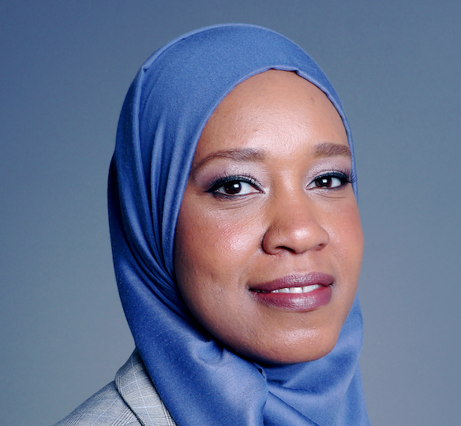

Meet Your "Senior Intelligence Officer," Huda Mukbil
February 21st, 2021
After writing up my articles on the arrest of Travis Patron, I took a quick look through "Antihate.ca," a government funded NGO that is as Anti-White, Anti-Goyim, and Perverted as it gets. I skimmed through a lot of articles, but when reading the one celebrating the oppression of the proud boys, I came across a very interesting section.
TDC_ARTICLE_START
"It gives Canadian security and law enforcement agencies greater investigative tools to mitigate the threats south of the border by not having Canadians participate," Huda Mukbil told the Canadian Anti-Hate Network. "Canadians, knowing that if they do participate in activities here in Canada, like glorifying violence or any activities here in Canada in support of the proud boys and any activities to support members of that group in the US would be considered a terrorist offence."
Mukbil, a former senior intelligence officer at the Canadian Security Intelligence Service (CSIS), also served as a strategic national security advisor for the Canada Border Service Agency (CBSA) and now works as a consultant providing advice on how to close racial and gender gaps in the Canadian national security and intelligence community. She says that an increased emphasis on information sharing is how the designation will be best served when working against these types of organizations.
“Far-right white supremacist groups do operate like Al Qaeda and ISIS,” she said. They're sharing, connecting, exchanging information about techniques.”
Just as these groups are transnational, so is the white supremacist movement. The Base and Atomwaffen Division both have international cells, including here in Canada. The prevalence of encrypted apps has created truly decentralized organizations with disparate membership and cells that communicate with ease.
“It becomes part of the CBSA mandate to look at returnees and the foreign fighter angle and shifts from not just ISIS and individuals that travelled to that part of the world, but also individuals that have travelled to Ukraine and Russia and spending some time there,” Mukbil said.
“There's a transnational element to this and moving it to the federal level makes investigating and analyzing and having a clearer picture possible.”
TDC_ARTICLE_STOP
"Senior Intelligence Officer" Huda Mukbil
If you've ever wanted to know who was spying on you, well here you go, goy. But you should definitely take these people VEWY SEWIOUSLY when they talk about "muh White Supreeemacists Terrorism," and label the Proud Boys a terrorist organization.